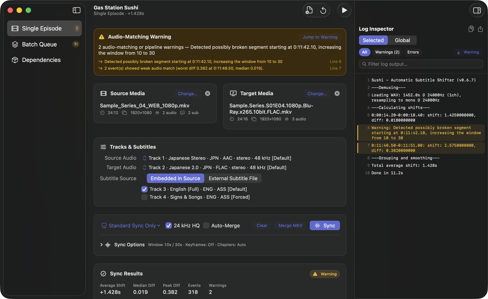
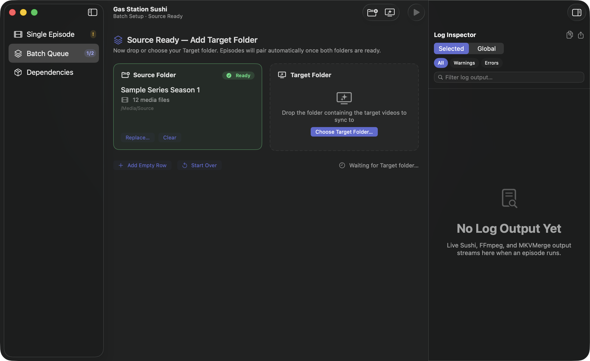
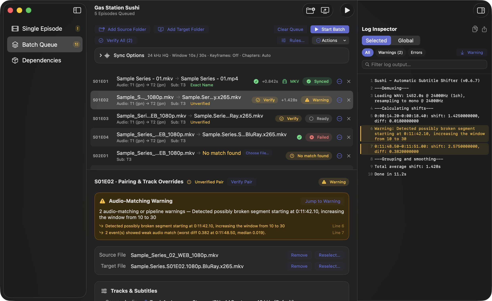
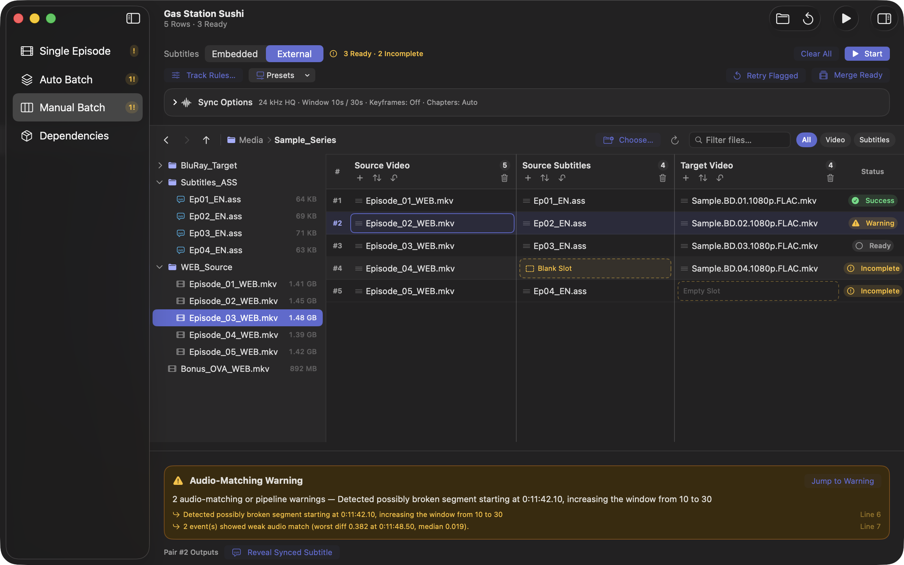
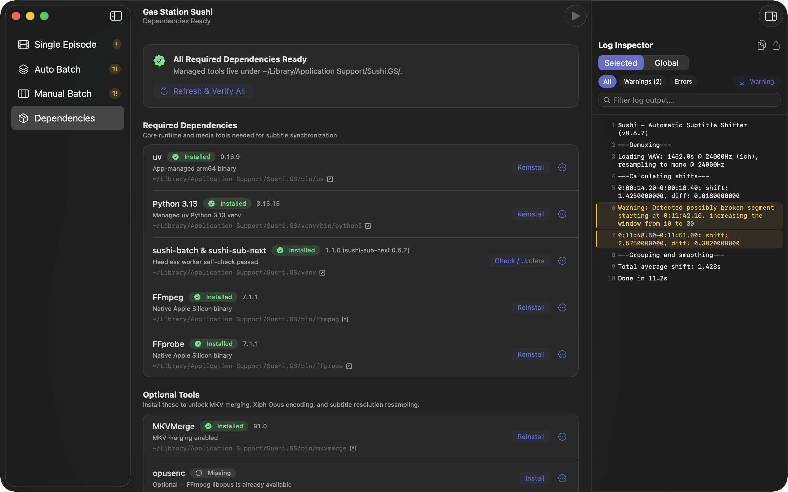

Single Episode, Auto Batch & Manual Batch
Sync a single episode, auto-pair full anime seasons in Embedded (2-folder) or External (3-folder) mode, or line up any files row-by-row in Manual Batch with a native inverted-L File Browser.
A native Apple Silicon macOS SwiftUI GUI for Sushi subtitle retiming, wrapping
C1fer/sushi-batch and
C1fer/sushi-next (sushi-sub-next).
Synchronize WEB-DL or fansub .ass, .srt, and .ssa subtitles to Blu-ray
(BD Remux) MKVs using dual-audio waveform matching—preserving ASS typesetting—with
Single Episode, Auto Batch, Manual Batch, and built-in
MKV muxing.
Sync a single episode, auto-pair full anime seasons in Embedded (2-folder) or External (3-folder) mode, or line up any files row-by-row in Manual Batch with a native inverted-L File Browser.
Matches S01E01, fansub titles like [Moozzi2] Show - 01, and zero-padded BDMV files like [Stardust] 00001 complete++.ass while strictly rejecting mismatched seasons and isolating bonus extras.
Inspect and pair audio/subtitle tracks via ffprobe & mkvmerge, tweak 24 kHz HQ, window, keyframes, and chapters inline, re-encode lossless audio (Opus/AAC/EAC-3), and optionally resample ASS resolution via aegisub-cli.
One click installs and updates uv, Python 3.13, sushi-batch, sushi-sub-next, Apple Silicon ffmpeg/ffprobe, and optional mkvmerge inside ~/Library/Application Support/Sushi.GS/.





| Tool | macOS Apple Silicon | Native GUI | Batch Modes | Setup |
|---|---|---|---|---|
| Sushi.GS | Yes (arm64, macOS 26+) |
Native macOS SwiftUI | Single Episode, Auto Batch (2- & 3-way), Manual Batch | .dmg + 1-click in-app installer (uv, sushi-batch, ffmpeg, mkvmerge) |
| C1fer/sushi-batch | Via Python 3.13+ | Cross-platform PyQt / CLI | Folder auto-batch + MKV merge & audio encode | Manual Python / uv + FFmpeg / MKVToolNix setup |
| SubtitleSynchroLauncher | No (Windows only) | Windows GUI | Batch launcher wrapper | Windows binary + manual tool paths |
| tp7/Sushi | Legacy (unmaintained Python) | CLI only | Single-file CLI (manual scripting) | Manual Python / OpenCV / FFmpeg setup |
| Sushi.Net | Via .NET runtime / build | CLI only | Single-file CLI (manual scripting) | Manual .NET + FFmpeg / MKVToolNix setup |
Yes. Sushi.GS ("Gas Station Sushi") is a native Apple Silicon SwiftUI macOS app that wraps C1fer/sushi-batch and C1fer/sushi-next (sushi-sub-next) with Single Episode, Auto Batch, Manual Batch, explicit track pickers, inline Sushi sync flags, and a live Log Inspector.
Drop your WEB-DL (Source) files, Blu-ray / BD Remux (Target) files, and optional external .ass/.srt/.ssa subtitles into Single Episode, Auto Batch, or Manual Batch, select the matching audio track on each side, and run Sync. Sushi shifts each dialogue and typesetting event individually via waveform matching—preserving ASS styling, signs, karaoke, and animations—and can optionally resample resolution with aegisub-cli and mux everything with mkvmerge.
No. Download Sushi.GS-0.1.1-arm64.dmg, drag Sushi.GS.app into Applications, and click Install Required Dependencies inside the Dependencies tab. Sushi.GS manages uv, Python 3.13, sushi-batch + sushi-sub-next, standalone Apple Silicon ffmpeg/ffprobe, and optional mkvmerge / opusenc inside ~/Library/Application Support/Sushi.GS/.
ffsubsync or alass?ffsubsync and alass rely on Voice Activity Detection (VAD) or a second reference subtitle track, which can drift across anime scene cuts, commercials, differing OP/ED edits, or non-dialogue ASS signs. Sushi compares the Source video's actual audio waveform directly against the Target video's audio waveform for per-segment, keyframe-snapped timing shifts that keep ASS typesetting intact.
Sushi.GS is a macOS SwiftUI frontend built on the upstream Sushi ecosystem without forking core internals:
C1fer/sushi-batch →
C1fer/sushi-next (sushi-sub-next) →
FichteFoll/Sushi (sushi-sub) →
tp7/Sushi.